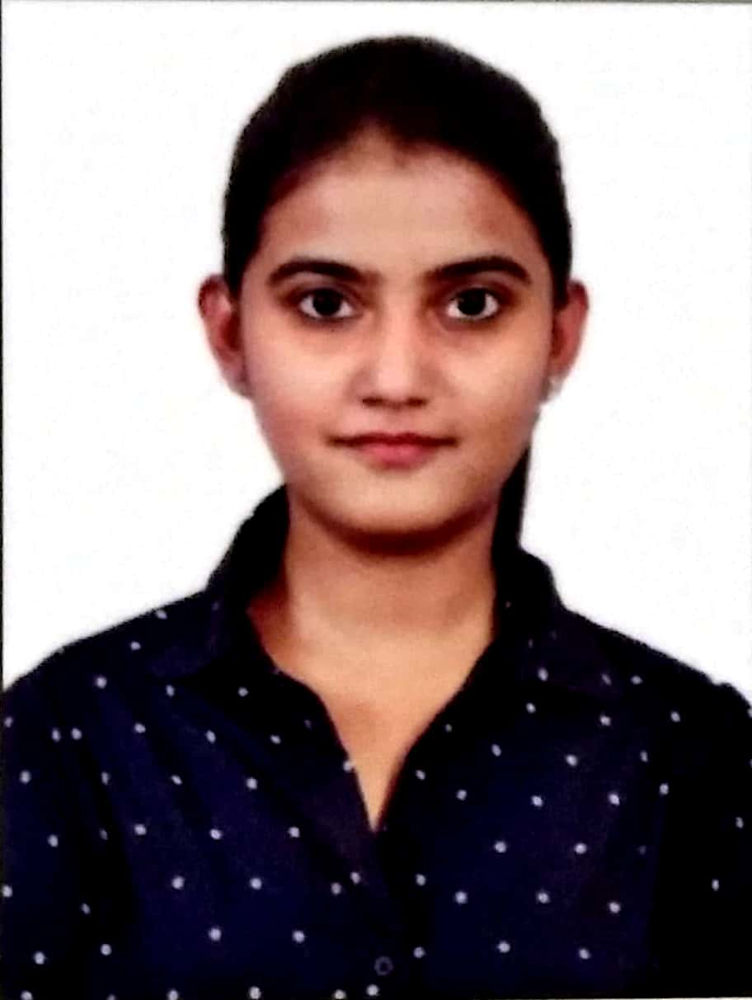

Vinodhini R

Summary
I'm a software engineer working at TSIP India. Skilled in full stack.
Education
Engineering:
- Vidyavardhaka College Of Engineering -2021
PUC:
- Marimallappa PU College -2017
School
- St. Joseph's high school -2015
Experience
- Experience working in the medical domain (CT Scanners) using C++.
- Designed and Implemented popup UI using MFC C++ for various tools of the product and was responsible for
developer/sanity testing.
- Developed and built an end to end solution for generating medical reports using HTML and CSS. Fixed
defects/bugs of the product using Coverity Connect.
- Supported various versions of the product Installers, implemented new features, handled backend workflow, and
also was responsible for documenting software design and sequence diagrams.
- Supported project workflow documentation as an Auditor.
Skills
- Programming languages: C++, SQL, JavaScript
- Web technologies: HTML5, CSS3, Bootstrap
- Tools: Visual studio, SVN, Coverity Connect, Code Collaborator
- Others: JQuery, OOPS, Debugging
Hobbies
Check out my hobby